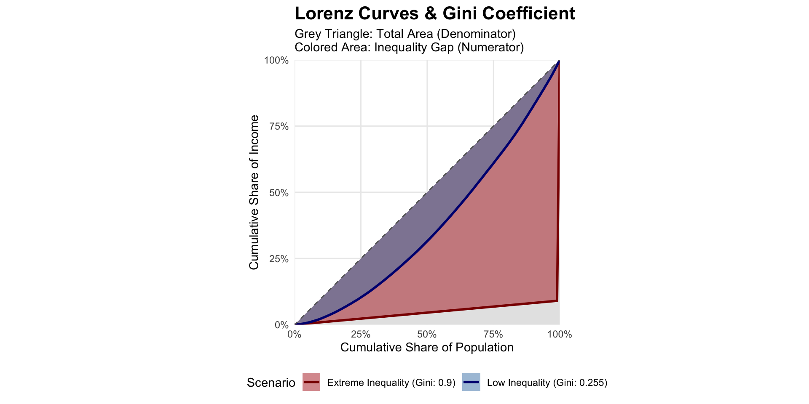
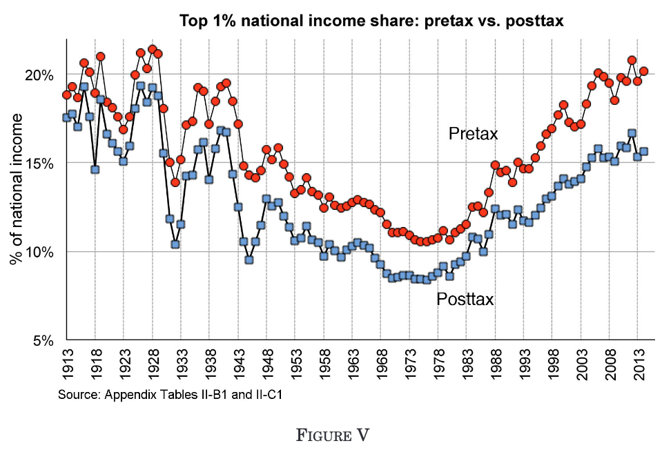
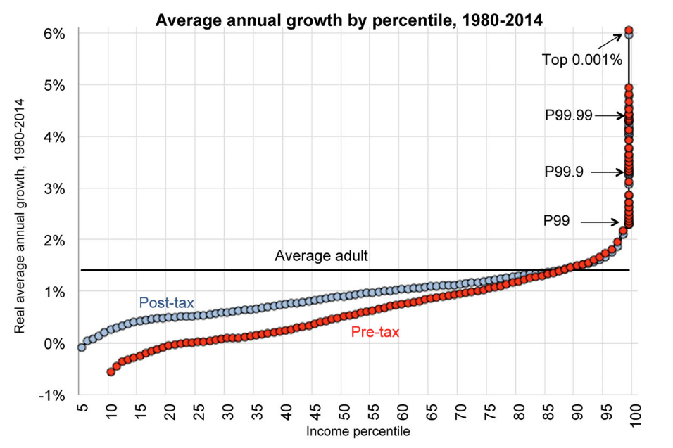
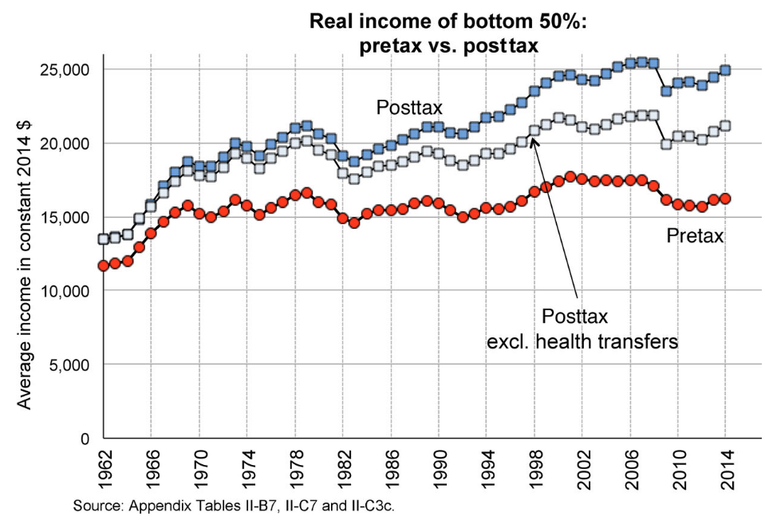
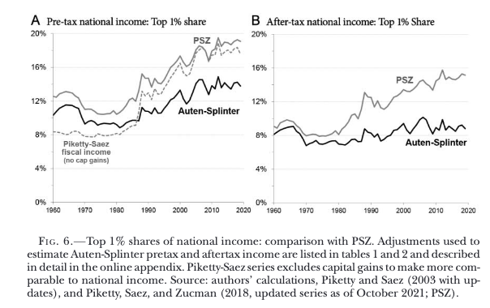

If you have full distributions of income/wealth it is straightforward to calculate the Gini as a summary statistic.
Depends strongly on the reference population: cohort, country, world?
Common to see inequality measured as the percent of income/wealth held by the top 0.1/1/10%, e.g. Alvaredo et al. (2013)
This only requires detailed knowledge of:
Aggregate wealth/income
The percentage of aggregate held by this percentile
Still really difficult
Most detailed income data comes from household surveys (e.g. Current Population Survey in the US)
Key problems at the top of the distribution:
These problems bias surveys downward for top income shares
Motivation: use administrative tax records instead
Piketty, Saez, and Zucman (2018) seek to allocate all of national income to individuals
Two-step process:
The IRS data is very large reducing sampling error compared to surveys
Goal: produce distributional national accounts — who gets what share of the national income as reported in national accounts
Pre-tax income: factor income plus social insurance benefits, before taxes and most transfers
Post-tax income: pre-tax income minus taxes, plus all government transfers
The gap between the two series measures the redistribution achieved by the state
Both series are informative: pre-tax tells us about market outcomes, post-tax about living standards

PSZ, Figure V


National income \(\neq\) sum of all tax returns and individual income \(\neq\) earnings.
PSZ must make judgments about three main categories of “missing” income:
Every choice here is contested and affects where in the distribution income ends up
Who really pays a tax depends on market structure, not who writes the cheque
E.g. Payroll tax: PSZ assume borne by employees (reduces wages), not employers
Corporate income tax: contested — borne by shareholders? All capital owners? Workers through lower wages?
Tariffs on inputs: borne by importers, or passed on to consumers as higher prices?
These are genuine empirical questions without consensus answers — economists work on estimating tax incidence
| Category | Example | How PSZ Allocate |
|---|---|---|
| Money transfers | EITC, social security | Directly to recipients |
| In-kind transfers | Medicare, Medicaid | To programme beneficiaries (usually at cost) |
| Public goods | Defence, roads, justice | Proportional to post-tax income |
| Deficit spending | — | 50% ↑ taxes / 50% ↓ transfers |
The public goods row is where the biggest judgments sit: “Given that we know relatively little about who benefits from spending on defense, police, the justice system, infrastructure, and the like, this seems like the most reasonable benchmark.” (Piketty, Saez, and Zucman 2018)
AS allocate public goods half per-capita, half proportional to after-tax income
Some capital income does not appear on tax returns as a cash flow:
PSZ impute these values and allocate them to individuals
Each imputation requires assumptions about who owns what
Small changes in ownership assumptions at the top can substantially shift top income shares
Start with the national accounts: all income in the economy
Allocate national income to individuals using tax returns
A large residual remains — income that does not appear on any return:
Make a series of judgments about how to distribute the residual
The key disagreement: Piketty, Saez, and Zucman (2018) allocate more of the residual to the top of the distribution; Auten and Splinter (2024) allocate more to the middle and bottom

Auten and Splinter (2024), Figure 6
PSZ and AS disagree most on how much tax evasion occurs, and where in the distribution
PSZ draw on work by Guyton et al. (n.d.), who compare random audits to targeted enforcement operations and tax amnesty programmes to estimate true evasion
Their finding: substantial evasion concentrated at the top of the distribution
AS dispute the magnitude of these estimates
But the deeper problem is structural: tax evasion is partially observed data
We never observe whether someone evaded — only whether they were caught:
| Person | True Fraud | Detected | Observed Fraud |
|---|---|---|---|
| 1 | 1 | 0 | 0 |
| 2 | 0 | 1 | 0 |
| 3 | 1 | 1 | 1 |
| … | … | … | … |
| N | 1 | 0 | 0 |
| Average | 50% | 50% | 25% |
\[P(\text{Observed Fraud}) = P(\text{True Fraud}) \times P(\text{Detected})\]
Seeing no recorded fraud tells us only that a person was never caught — not that they never evaded.
\[P(\text{Observed}) = P(\text{Fraud}) \times P(\text{Detect | Fraud})\]
Estimate the model using observable characteristics to separately identify the fraud rate and the detection rate
Clever but fragile: identification rests on functional form assumptions that cannot easily be tested
In computer science / machine learning the same problem is called positive and unlabelled learning — a large literature on handling it has grown up independently
The US government succeeds in negotiating down the prices of medical services provided to Medicare and Medicaid. What happens to measured inequality under the distributional national accounts framework?
Consider:
The US raises taxes substantially to fund increased military expenditure. Would this affect measured inequality? Would the effect differ between the PSZ and AS approaches? Which approach would you favour, and why?
Consider: